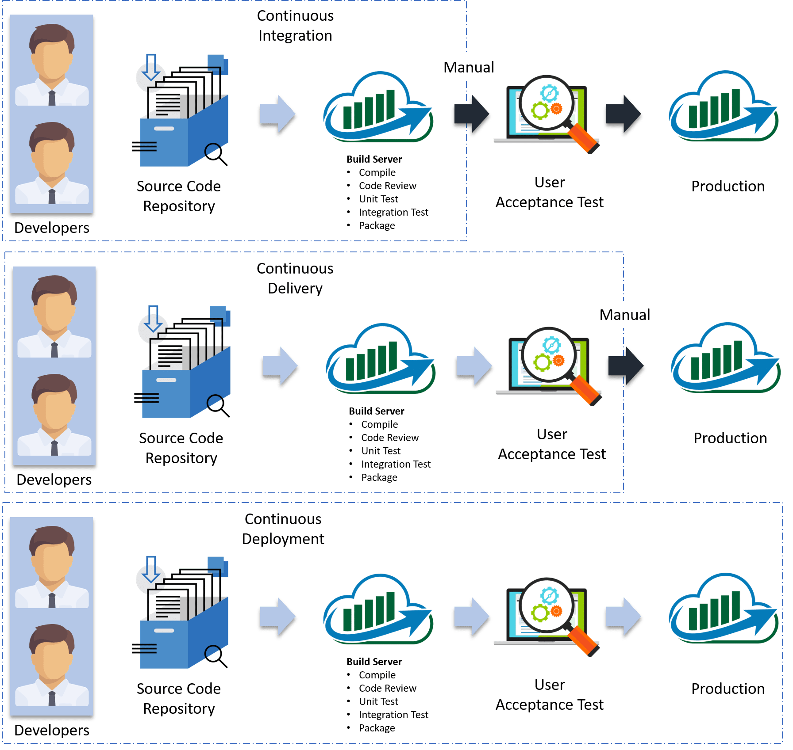
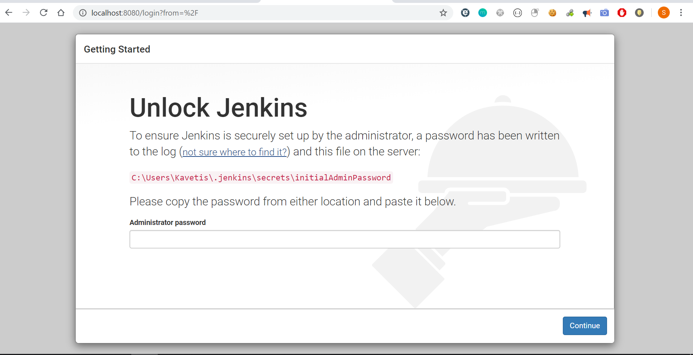
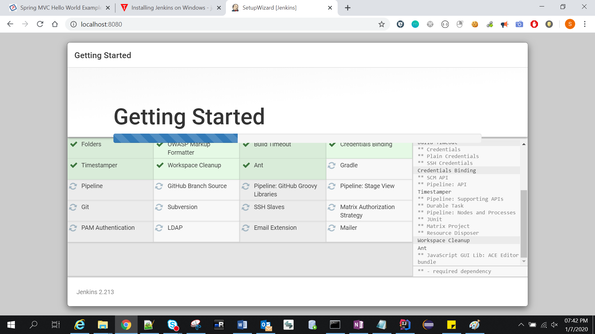
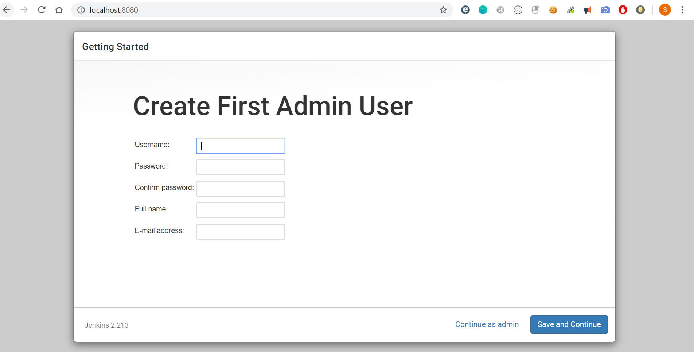
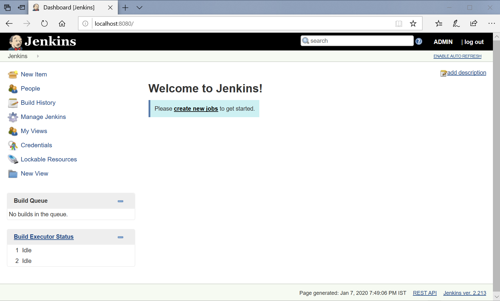
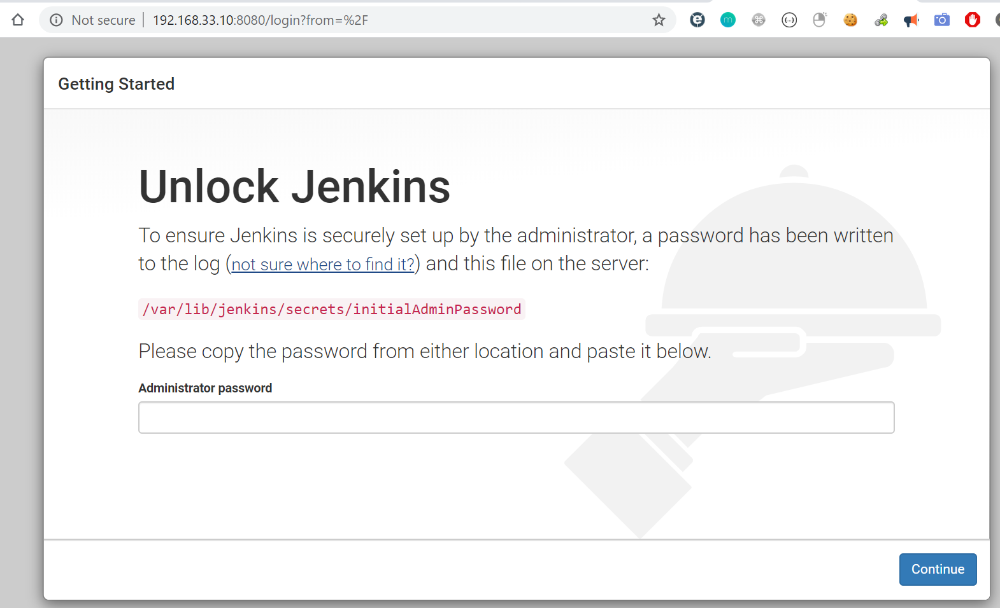

Jenkins – Introduction
Jenkins is an open source automation tool written in Java programming language that allows continuous integration.
What Is Continuous Integration.

Continuous Integration, every code commit is built and tested, but, is not in a condition to be released. I mean the build application is not automatically deployed on the test servers in order to validate it using different types of Blackbox testing like - User Acceptance Testing (UAT).
Continuous Delivery, the application is continuously deployed on the test servers for UAT. Or, you can say the application is ready to be released to production anytime. So, obviously Continuous Integration is necessary for Continuous Delivery.
Continuous Deployment is the next step past Continuous Delivery, where you are not just creating a deployable package, but you are actually deploying it in an automated fashion.
Continuous Integration Tools
Bamboo
This is available with free trial license. Bamboo is written in Java and it
is easily works with JIRA & Bitbucket. It’s also allow you to import jenkins
data to Bamboo easily. Bamboo also supports others tools like AWS, Amazon S3,
Ant, Docker, codeDeploy, Maven, Git & SVN.
https://www.atlassian.com/software/bamboo
TeamCity
java based continuous integration server which is belongs to JetBrains labs. It
is available in free and paid license for users. It’s free version offers
almost all the features but for up to 20 build configurations and 3 free Build
Agents. Teamcity also supports different tools and frameworks and also it’s
available with wide variety of plugins. It’s also support .Net features which
makes it suitable for .Net projects.
https://www.jetbrains.com/teamcity/
Travis CI
Travis CI is an open source continuous integration tool which is written in
RUBY. It’s easily get sync with GitHub. It’s supports platforms like Linux, Mac
or iOS and also supports many languages in which Node js, php, Xcode, python,
java, are few of them. It also performs parallel test runs using their great
APIs and command line tools. Free for open repositories, Enterprise for
private.
https://travis-ci.org/getting_started
UrbanCode
UBuild-UDeploy-URelease is also known as Urbancode deploy is a collaborative
product of IBM. UrbanCode from IBM is built.So its Paid.
https://developer.ibm.com/urbancode/
CruiseControl
Open Source. Very old. http://cruisecontrol.sourceforge.net/
Types of Environments
-
Development
-
QA -only Functional testing of the system
-
Integration Testing -Tests the system from end to end
-
User Acceptance Testing(UAT) -user will validate the functionality over time.
-
CERT -CERT is Certification environment! It’s just where you certify your product so that it can move to production
-
Production - Production
-
Production Parallel -A parallel of production to replicate production issues
How Jenkins works

-
developer commits the code to the source code repository. Meanwhile, the Jenkins checks the repository at regular intervals for changes.
-
Soon after a commit occurs, the Jenkins server finds the changes that have occurred in the source code repository. Jenkins will draw those changes and will start preparing a new build.
-
If the build fails, then the concerned team will be notified.
-
If built is successful, then Jenkins server deploys the built in the test server.
-
After testing, Jenkins server generates a feedback and then notifies the developers about the build and test results.
-
It will continue to verify the source code repository for changes made in the source code and the whole process keeps on repeating.
Jenkins Architecture
Jenkins architecture has two components:
-
Jenkins Master/Server
-
Jenkins Slave/Node

Jenkins Installation
Windows
3.Open Command Line as Administrator & Run below cmd by navigate to downloaded location
java -jar Jenkins.war
#By changing Port number
java -jar jenkins.war --httpPort=2222
 Copy the password from console
Copy the password from console
4.Accessing Jenkins by http://localhost:8080 , it will ask for the Administrator password – Paste above copied password. 
5.Next, select plug-ins to install. 
6.Create admin user. 
7.After that’s just click finish, I will navigate to Dashboard page. 
Ubuntu -vagrant
Installing Java
-
Open a terminal window on your Ubuntu server.
-
Issue the command below & Allow the installation to complete.
sudo add-apt-repository ppa:webupd8team/java
sudo -E add-apt-repository ppa:openjdk-r/ppa
sudo apt-get update
sudo apt-get install openjdk-8-jdk
To verify Java has been installed, issue the command:
java --version
Jenkins Install
wget -q -O - https://pkg.jenkins.io/debian/jenkins-ci.org.key | sudo apt-key add -
sudo sh -c 'echo deb http://pkg.jenkins.io/debian-stable binary/ >
/etc/apt/sources.list.d/jenkins.list'
sudo apt-get update
sudo apt-get install Jenkins -y
Check Status
service jenkins status
systemctl status jenkins
jenkins restart
# Usage: /etc/init.d/jenkins {start\|stop\|status\|restart\|force-reload}
sudo /etc/init.d/jenkins restart
# Jenkins Install location
/etc/init.d/jenkins
# Port Change
edit the /etc/default/jenkins to replace HTTP_PORT=8081
To Access Jenkins VIA Browser
-
Open the vagrant file (should be in the directory where you specified to create a new vagrant machine).
-
Search for config.vm.network.
config.vm.network "private_network", ip: "192.168.33.10" -
Here ip address (192.168.33.10) can be any ip address you want.
-
Now logout from the vagrant machine and reload your vagrant machine by this command vagrant reload.
Access Jenkins : http://192.168.33.10:8080/login?from=%2F

In the terminal window, we’ll use the cat command to display the password:
sudo cat /var/lib/jenkins/secrets/initialAdminPassword
Follow same steps as windows Installation from now on wards.
CentOS – Vagrant
Installing Java
sudo yum install java-1.8.0-openjdk-devel
To verify Java has been installed, issue the command:
java --version
Install Jenkins
To enable Jenkins repository, import the GPG key using the following curl command:
curl --silent --location http://pkg.jenkins-ci.org/redhat-stable/jenkins.repo|
sudo tee /etc/yum.repos.d/jenkins.repo
sudo rpm --import https://jenkins-ci.org/redhat/jenkins-ci.org.key
install the latest stable version of Jenkins
sudo yum install jenkins
Start Jenkins
sudo systemctl start jenkins
Check Status
systemctl status Jenkins
service jenkins status
Finally enable the Jenkins service to start on system boot.
sudo systemctl enable jenkins
Update Vagrant file with Private IP to able to access with host system browser
config.vm.network "private_network", ip: "192.168.33.11"
Reload vagrant CentOS box
vagrant reload
Access Jenkins http://192.168.33.11:8080 , for the first time enter password by doing
sudo cat /var/lib/jenkins/secrets/initialAdminPassword
O/p : 576f5d4d5e6a45b68061ba22c08eb27a
Select Plugins to install > Done!!!
Manage Jenkins
Configure System
Configure global settings and paths.
-
Home directory -where Jenkins stores all of its data in file system.
-
Maven Configuration - Installation location, MAVEN_HOME, .m2 location,
-
Jenkins URL - Custom Jenkins URL
-
SonarQube - Servers Details
-
E-mail Notification - SMTP servers
-
Artifactory servers
-
Subversion
Configure Global Security
Secure Jenkins; define who can access/use the system.
Configure Credentials
Configure the credential providers and types – LDAP servers.
Global Tool Configuration
Configure tools, their locations and automatic installers.
-
Maven installations
-
JDK installations
-
Ant installations
-
SonarQube Scanner installations
Reload Configuration from Disk
Discard all the loaded data in memory and reload everything from file system.
Useful when you modified config files directly on disk.
Manage Plugins
Add, remove, disable or enable plugins that can extend the functionality of
Jenkins.
System Information
Displays various environmental information to assist trouble-shooting.
System Log
System log captures output from java.util.logging output related to Jenkins.
Load Statistics
Check your resource utilization and see if you need more computers for your builds.
Jenkins CLI
Access/manage Jenkins from your shell, or from your script.
Script Console
Executes arbitrary script for administration/trouble-shooting/diagnostics.
Manage Nodes and Clouds
Add, remove, control and monitor the various nodes that Jenkins runs jobs on.
Manage Users
Create/delete/modify users that can log in to this Jenkins
Prepare for Shutdown
Stops executing new builds, so that the system can be eventually shut down
safely.